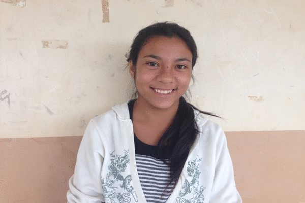

Testimonio de Beatriz Artalaz, primera becaria universitaria.

"Dale tu Mano fue lo mejor que me pudo pasar en la vida; yo nunca me imaginé que iba a cumplir mi sueño de ser maestra. Pensé primero estudiar una carrera corta y así no hacer que mi mamá gaste en mí, y poder yo pagarme los gastos para poder llegar a ser una maestra, porque para mí es una profesión muy linda, enseñando y ayudando; siendo maestra estoy formando a personas para el futuro, y es algo que me hace sentir tan bien, me llena de alegría entrar a un aula y ver a los chicos y estar con ellos.
La verdad es que Dale tu Mano me cambió la vida, además de darme esta gran oportunidad de poder estar realizando mi sueño, porque sin su ayuda en estos momentos estaría estudiando otra cosa. Me ayudaron a vencer mis miedos, a darme cuenta de que sí puedo, y ver que con esfuerzo todo se puede lograr.
Yo nunca pensé ni siquiera salir de mi casa -y menos a una ciudad que nunca vine y vivir sola y lejos de todo-, pero siempre me estuvieron apoyando y no me dejaron nunca sola y yo a todos los de esta fundación les estoy muy agradecida porque me están ayudando a cumplir mi sueño, nunca en la vida pensé que iba a pasarme esto a mí, y como le digo siempre a mi mamá, el que yo esté hoy acá estudiando es una gran bendición de Dios, y a todos que siempre me apoyaron.
A todos los de la fundación no me queda más que agradecerles por todo lo que siempre hicieron por mí."
Evento Septiembre
At vero eos et accusamus et iusto odio dignissimos ducimus qui blanditiis praesentium voluptatum deleniti atque corrupti quos dolores et quas molestias excepturi sint occaecati cupiditate non provident, similique sunt in culpa qui officia deserunt mollitia animi, id est laborum et dolorum fuga. Et harum quidem rerum facilis est et expedita distinctio.